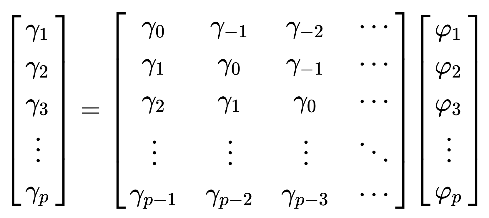

An AR model is a representation of a time serie which specifies that the output variable depends linearly on its own previous values and on an inpredictable stochastic term (a white noise).
An AR processus has one hyperparameter \(p\), that represents its order ie the number of dependances:
Let \(X_t\) be an \(AR_p\) process. Then:
\[X_t = c + \sum_{k=1}^{p} \varphi_k X_{t-k} + \varepsilon_t\]Where:
\(X_t\) is weighted sum of its \(p\) more recent past values and an inpredictable value \(\varepsilon_t\). \(\varepsilon_t\) is also called the innovation of the processus.
Introducing the lag (or backshift) operator \(L\) such as \(L^h X_t = X_{t-h}\) we can write:
\[\left(1-\sum_{k=1}^p L^k \varphi_k \right) X_t = c + \varepsilon_t\]Let define the characteristic polynomial of the \(AR_p\) processus as:
\[\Phi(L) := 1 - \sum_{k=1}^{p} \varphi_{k} L^k\]We can finally rewrite:
\[\Phi(L) X_t= c + \varepsilon_t\]For \(X_t\) to be a stationary process, the roots of the polynomial \(\Phi(L)\) must all have an absolute value greater than 1 (they must lie outside the unit circle).
Yule-Walker equations create a direct link between the parameters of the \(AR_p\) process and its autocovariances:
\[\gamma_j = \sum_{k=1}^p \varphi_k \gamma_{j-k} \text{,} \;\;\; \forall j \in [1, p]\]And:
\[\gamma_0 = \sum_{k=1}^p \varphi_k \gamma_{-k} \sigma^2\]Where:
To estimate the \(\gamma_{j-k}\) we must resolve this linear equation:

And then \(\gamma_0\) is deduced from the other values.
See:
An \(AR_1\) process can be represented as a \(MA_\infty\) process.
An \(AR_1\) process is:
\[\begin{eqnarray} X_{t} &&= c + \varphi X_{t-1} + \varepsilon_{t} \\ &&= c + \varphi (c + \varphi X_{t-2} + \varepsilon_{t-1}) + \varepsilon_{t} \\ &&= (c + \varphi c) + \varphi^2 (c + X_{t-3} + \varepsilon_{t-2}) + (\varepsilon_{t} + \varphi \varepsilon_{t-1}) \\ &&= c \sum_{k=0}^\infty \varphi^k + \sum_{k=0}^\infty \varphi^k \varepsilon_{t-k} \end{eqnarray}\]Hence:
\[X_{t} = c + \varphi X_{t-1} + \varepsilon_{t} = c \sum_{k=0}^\infty \varphi^k + \sum_{k=0}^\infty \varphi^k \varepsilon_{t-k}\]Which is an \(MA_\infty\) representation.
See:
A moving-average model or moving-average process specifies that the output variable depends linearly on the current and various past values of an inpredictable stochastic term (a white noise).
Let \(X_t\) be an \(MA_q\) process. Then:
\[X_t = c + \sum_{k=1}^{q} \theta_k \varepsilon_{t-k} + \varepsilon_t\]Where:
\(X_t\) is weighted sum of its \(q\) more recent observed values of the white noise \(\varepsilon_{t-q}\). \(\varepsilon_t\) is also called the innovation of the processus.
Introducing the lag (or backshift) operator \(L\) such as \(L^h X_t = X_{t-h}\) we can write:
\[\left(1-\sum_{k=1}^q L^k \theta_i \right) \varepsilon_t = X_t - c\]Let define the characteristic polynomial of the \(MA_q\) processus as:
\[\Theta(L) := 1 - \sum_{k=1}^{q} \varphi_{k} L^k\]We can finally rewrite:
\[X_t = \Theta(L) \varepsilon_t + c\]A MA process is always stationary.
See:
An \(MA_1\) process can be represented as a \(AR_\infty\) process.
An \(MA_1\) process can be written as
\[\begin{eqnarray} \varepsilon_{t} &&= X_{t} - c - \theta \varepsilon_{t-1} \\ &&= - c - \theta (X_{t-1} - c - \theta \varepsilon_{t-2}) + X_{t} \\ &&= -c + \theta c + \theta^2 (X_{t-2} - c - \theta \varepsilon_{t-3}) + (X_{t} + \theta X_{t-1}) \\ &&= c \sum_{k=0}^\infty (-\theta)^k + \sum_{k=0}^\infty (-\theta)^k X_{t-k} + X_{t} \end{eqnarray}\]Hence:
\[X_{t} = c \sum_{k=1}^\infty (-\theta)^k + \sum_{k=1}^\infty (-\theta)^k X_{t-k} + \varepsilon_{t}\]If \(\vert \theta \vert \lt 1\), the infinite serie \(\sum_{k=0}^\infty (-\theta)^k\) converges to a finite value and under this condition, \(MA_1\) has an \(AR_\infty\) representation.
See:
An autoregressive–moving-average (ARMA) models provides a parsimonious description of a (weakly) stationary stochastic process in terms of two polynomials, one for the autoregression (AR) and the second for the moving average (MA).
Let \(X_t\) be an \(ARMA_{p,q}\) process. Then:
\[X_t + \sum_{k=1}^{p} \varphi_k X_{t-k} = \varepsilon_t + \sum_{k=1}^{q} \theta \varepsilon_{t-k}\]Or using the characteristic polynomial and the lag operator:
\[\Phi(L)X_t = \Theta(L)\epsilon_t\]With the underlying conditions:
The condition for stationarity is the same than for an \(AR_p\) process:
For \(X_t\) to be a stationary process, the roots of the polynomial \(\Phi(L)\) must all have an absolute value greater than 1 (they must lie outside the unit circle).
The representation of an ARMA is said to be minimal if: \(\varphi_k \lt 1\) and \(\theta_k \lt 1\) and \(\forall i,j \varphi_i \neq \theta_j\).
If \(X_t\) is a minimal \(ARMA_{p,q}\) process then:
it has a \(MA_\infty\) representation:
\[\begin{eqnarray} X_t &&= \frac{\Theta(L)}{\Phi(L)} \epsilon_t \\ &&= \sum_{k=0}^{\infty} \psi_k \epsilon_{t-k} \end{eqnarray}\]it has a \(AR_\infty\) representation:
\[\begin{eqnarray} \frac{\Phi(L)}{\Theta(L)} X_t &&= \epsilon_t \\ &&= \sum_{k=0}^{\infty} \pi_k X_{t-k} \text{, } \;\;\; \pi_0 = 1 \end{eqnarray}\]See: Course on time series by Unviersité Paris Saclay (in french).
ARIMA and SARIMA processes are generalisation of the ARIMA process for non stationary processes.
ARIMA is used for process with a trend.
Let \(X_t\) be a process with a polynomial trend of degree \(d\), hence:
\[Y_t = \Delta^d X_t\]is a stationary process. If \(Y_t\) is an \(ARMA_{p,q}\) hence \(X_t\) is an \(ARIMA_{p,d,q}\).
Where:
SARIMA is used for process with a trend and a seasonality.
Let \(X_t\) be a process with a polynomial trend of degree \(d\) and a seasonality \(T\), hence:
\[Y_t = \Delta_T \circ \Delta^d X_t\]Where:
The parameters of an ARMA models (not the hyperparamets) are the \(\phi_k\), the \(\theta_k\) and \(\sigma^2\).
Three methodes exists to estimate theses parameters:
See: these slides by Umberto Triacca.
See: